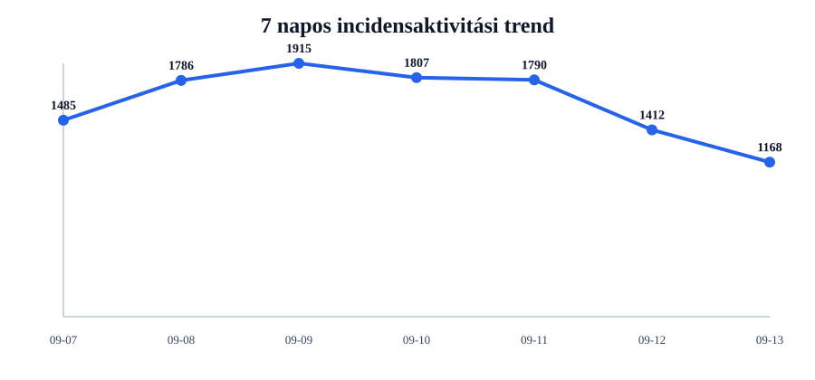
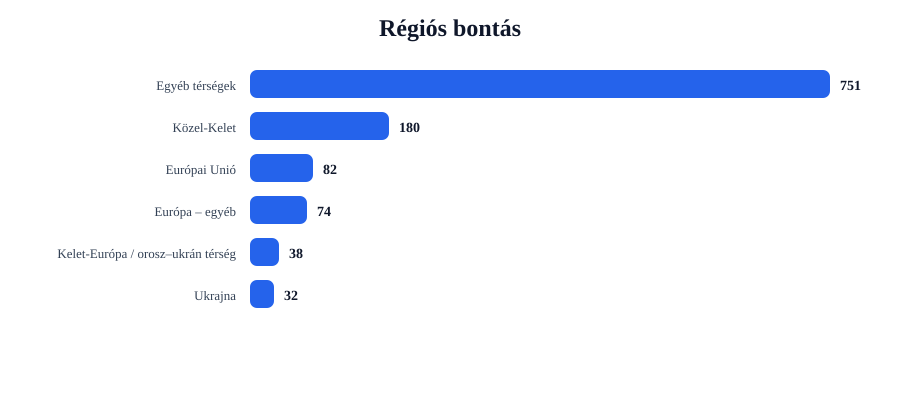
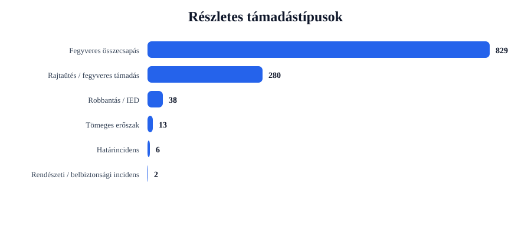
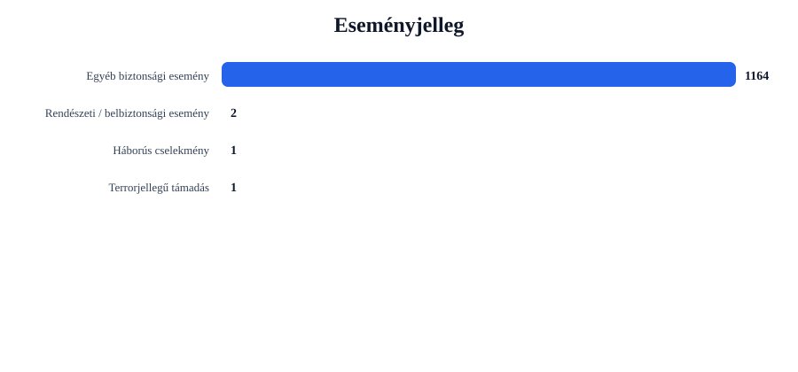

Rövid napi értékelés
Az incidensek száma csökkent: -244 esemény, 17.3% visszaesés.
A legtöbb találat ehhez az országhoz kapcsolódott: United States (274 esemény).
A legerősebb regionális súlypont: Egyéb térségek (751 esemény).
A leggyakoribb részletes támadástípus: Fegyveres összecsapás (829 találat).
A leggyakoribb eseményjelleg: Egyéb biztonsági esemény (1164 találat).
A drón-, terrorjellegű és háborús események felismerése kulcsszavas besorolással történik. Ez jó elemzési szűrő, de kézi ellenőrzést továbbra is igényelhet.
Régiós helyzetkép
Európai Unió
Azonosított események száma: 82. Leginkább érintett országok: Germany (12), Ireland (12), France (8).
Domináns támadástípusok: Fegyveres összecsapás (62), Rajtaütés / fegyveres támadás (19), Tömeges erőszak (1). Domináns eseményjelleg: Egyéb biztonsági esemény (82).
| Cím | Ország | Helyszín | Részletes típus | Eseményjelleg | Forrás |
|---|---|---|---|---|---|
| fight – France | France | France | Fegyveres összecsapás | Egyéb biztonsági esemény | www.dailyfreeman.com |
| fight – Germany | Germany | Germany | Fegyveres összecsapás | Egyéb biztonsági esemény | www.business-standard.com |
| fight – Poland | Poland | Poland | Fegyveres összecsapás | Egyéb biztonsági esemény | english.aawsat.com |
| fight – Berlin, Berlin, Germany | Germany | Berlin, Berlin, Germany | Fegyveres összecsapás | Egyéb biztonsági esemény | www.timeslive.co.za |
| fight – Warsaw, (PL67), Poland | Poland | Warsaw, (PL67), Poland | Fegyveres összecsapás | Egyéb biztonsági esemény | whbl.com |
Ukrajna
Azonosított események száma: 32. Leginkább érintett országok: Ukraine (32).
Domináns támadástípusok: Robbantás / IED (22), Fegyveres összecsapás (8), Rajtaütés / fegyveres támadás (2). Domináns eseményjelleg: Egyéb biztonsági esemény (32).
| Cím | Ország | Helyszín | Részletes típus | Eseményjelleg | Forrás |
|---|---|---|---|---|---|
| fight – Odesa, Odes'ka Oblast, Ukraine | Ukraine | Odesa, Odes'ka Oblast, Ukraine | Robbantás / IED | Egyéb biztonsági esemény | thepeninsulaqatar.com |
| fight – Kramatorsk, Donets'ka Oblast', Ukraine | Ukraine | Kramatorsk, Donets'ka Oblast', Ukraine | Robbantás / IED | Egyéb biztonsági esemény | www.mercurynews.com |
| assault – Odesa, Odes'ka Oblast, Ukraine | Ukraine | Odesa, Odes'ka Oblast, Ukraine | Robbantás / IED | Egyéb biztonsági esemény | www.aol.co.uk |
| fight – Yalta, Donets'ka Oblast', Ukraine | Ukraine | Yalta, Donets'ka Oblast', Ukraine | Robbantás / IED | Egyéb biztonsági esemény | krdo.com |
| assault – Kurylivka, Chernihivs'ka Oblast', Ukraine | Ukraine | Kurylivka, Chernihivs'ka Oblast', Ukraine | Robbantás / IED | Egyéb biztonsági esemény | www.globalsecurity.org |
Balkán
Azonosított események száma: 11. Leginkább érintett országok: Turkey (11).
Domináns támadástípusok: Fegyveres összecsapás (9), Rajtaütés / fegyveres támadás (2). Domináns eseményjelleg: Egyéb biztonsági esemény (11).
| Cím | Ország | Helyszín | Részletes típus | Eseményjelleg | Forrás |
|---|---|---|---|---|---|
| fight – Istanbul, Istanbul, Turkey | Turkey | Istanbul, Istanbul, Turkey | Fegyveres összecsapás | Egyéb biztonsági esemény | cyprus-mail.com |
| fight – Gurlek, Usak, Turkey | Turkey | Gurlek, Usak, Turkey | Fegyveres összecsapás | Egyéb biztonsági esemény | www.independent.co.uk |
| fight – Ankara, Ankara, Turkey | Turkey | Ankara, Ankara, Turkey | Fegyveres összecsapás | Egyéb biztonsági esemény | thepeninsulaqatar.com |
| fight – Mersin, Iç, Turkey | Turkey | Mersin, Iç, Turkey | Fegyveres összecsapás | Egyéb biztonsági esemény | timesofindia.indiatimes.com |
| fight – Turkey | Turkey | Turkey | Fegyveres összecsapás | Egyéb biztonsági esemény | www.bbc.com |
Közel-Kelet
Azonosított események száma: 180. Leginkább érintett országok: Israel (31), Iran (26), Yemen (22).
Domináns támadástípusok: Fegyveres összecsapás (136), Rajtaütés / fegyveres támadás (37), Tömeges erőszak (7). Domináns eseményjelleg: Egyéb biztonsági esemény (180).
| Cím | Ország | Helyszín | Részletes típus | Eseményjelleg | Forrás |
|---|---|---|---|---|---|
| fight – Iran | Iran | Iran | Fegyveres összecsapás | Egyéb biztonsági esemény | www.theepochtimes.com |
| fight – Saudi Arabia | Saudi Arabia | Saudi Arabia | Fegyveres összecsapás | Egyéb biztonsági esemény | www.sitkasentinel.com |
| fight – Israel | Israel | Israel | Fegyveres összecsapás | Egyéb biztonsági esemény | www.freemalaysiatoday.com |
| fight – Gaza, Israel (general), Israel | Israel | Gaza, Israel (general), Israel | Fegyveres összecsapás | Egyéb biztonsági esemény | www.dailykos.com |
| fight – Sanaa, Sana', Yemen | Yemen | Sanaa, Sana', Yemen | Fegyveres összecsapás | Egyéb biztonsági esemény | www.sitkasentinel.com |
Kelet-Európa / orosz–ukrán térség
Azonosított események száma: 38. Leginkább érintett országok: Russia (36), Moldova (1), Belarus (1).
Domináns támadástípusok: Fegyveres összecsapás (16), Robbantás / IED (15), Rajtaütés / fegyveres támadás (7). Domináns eseményjelleg: Egyéb biztonsági esemény (38).
| Cím | Ország | Helyszín | Részletes típus | Eseményjelleg | Forrás |
|---|---|---|---|---|---|
| fight – Volyn, Tul'skaya Oblast', Russia | Russia | Volyn, Tul'skaya Oblast', Russia | Robbantás / IED | Egyéb biztonsági esemény | www.politico.eu |
| assault – Volyn, Tul'skaya Oblast', Russia | Russia | Volyn, Tul'skaya Oblast', Russia | Robbantás / IED | Egyéb biztonsági esemény | sana.sy |
| fight – Yalta, Tul'skaya Oblast', Russia | Russia | Yalta, Tul'skaya Oblast', Russia | Robbantás / IED | Egyéb biztonsági esemény | www.kyivpost.com |
| fight – Samara, Samarskaya Oblast', Russia | Russia | Samara, Samarskaya Oblast', Russia | Robbantás / IED | Egyéb biztonsági esemény | www.mercurynews.com |
| assault – Kursk, Kurskaya Oblast', Russia | Russia | Kursk, Kurskaya Oblast', Russia | Robbantás / IED | Egyéb biztonsági esemény | www.globalsecurity.org |
Európa – egyéb
Azonosított események száma: 74. Leginkább érintett országok: United Kingdom (66), Switzerland (3), Norway (2).
Domináns támadástípusok: Fegyveres összecsapás (48), Rajtaütés / fegyveres támadás (23), Tömeges erőszak (3). Domináns eseményjelleg: Egyéb biztonsági esemény (74).
| Cím | Ország | Helyszín | Részletes típus | Eseményjelleg | Forrás |
|---|---|---|---|---|---|
| fight – United Kingdom | United Kingdom | United Kingdom | Fegyveres összecsapás | Egyéb biztonsági esemény | screenrant.com |
| fight – London, London, City of, United Kingdom | United Kingdom | London, London, City of, United Kingdom | Fegyveres összecsapás | Egyéb biztonsági esemény | www.express.co.uk |
| assault – London, London, City of, United Kingdom | United Kingdom | London, London, City of, United Kingdom | Rajtaütés / fegyveres támadás | Egyéb biztonsági esemény | pmnewsnigeria.com |
| fight – Black Sea, Oceans (general), Oceans | Oceans | Black Sea, Oceans (general), Oceans | Fegyveres összecsapás | Egyéb biztonsági esemény | jamaica-gleaner.com |
| fight – Northern Ireland, Craigavon, United Kingdom | United Kingdom | Northern Ireland, Craigavon, United Kingdom | Fegyveres összecsapás | Egyéb biztonsági esemény | www.dailyrecord.co.uk |
Egyéb térségek
Azonosított események száma: 751. Leginkább érintett országok: United States (274), India (94), Nigeria (67).
Domináns támadástípusok: Fegyveres összecsapás (550), Rajtaütés / fegyveres támadás (190), Határincidens (6). Domináns eseményjelleg: Egyéb biztonsági esemény (747), Rendészeti / belbiztonsági esemény (2), Háborús cselekmény (1).
| Cím | Ország | Helyszín | Részletes típus | Eseményjelleg | Forrás |
|---|---|---|---|---|---|
| fight – Piedmont Park, Georgia, United States | United States | Piedmont Park, Georgia, United States | Robbantás / IED | Terrorjellegű támadás | www.dailymail.com |
| fight – Cuito Cuanavale, Cuando Cubango, Angola | Angola | Cuito Cuanavale, Cuando Cubango, Angola | Fegyveres összecsapás | Háborús cselekmény | kaieteurnewsonline.com |
| fight – New York, United States | United States | New York, United States | Fegyveres összecsapás | Egyéb biztonsági esemény | www.yahoo.com |
| fight – South Africa | South Africa | South Africa | Fegyveres összecsapás | Egyéb biztonsági esemény | naija247news.com |
| fight – Perth, Western Australia, Australia | Australia | Perth, Western Australia, Australia | Fegyveres összecsapás | Egyéb biztonsági esemény | www.theage.com.au |
Grafikonos áttekintés




Top 5 kiemelt esemény
| # | Cím | Ország | Helyszín | Részletes típus | Eseményjelleg | Súly | Forrás |
|---|---|---|---|---|---|---|---|
| 1 | fight – Piedmont Park, Georgia, United States | United States | Piedmont Park, Georgia, United States | Robbantás / IED | Terrorjellegű támadás | 26 | www.dailymail.com |
| 2 | fight – Odesa, Odes'ka Oblast, Ukraine | Ukraine | Odesa, Odes'ka Oblast, Ukraine | Robbantás / IED | Egyéb biztonsági esemény | 21 | thepeninsulaqatar.com |
| 3 | fight – Kramatorsk, Donets'ka Oblast', Ukraine | Ukraine | Kramatorsk, Donets'ka Oblast', Ukraine | Robbantás / IED | Egyéb biztonsági esemény | 21 | www.mercurynews.com |
| 4 | assault – Odesa, Odes'ka Oblast, Ukraine | Ukraine | Odesa, Odes'ka Oblast, Ukraine | Robbantás / IED | Egyéb biztonsági esemény | 21 | www.aol.co.uk |
| 5 | fight – Yalta, Donets'ka Oblast', Ukraine | Ukraine | Yalta, Donets'ka Oblast', Ukraine | Robbantás / IED | Egyéb biztonsági esemény | 20 | krdo.com |
Napi bontások
Régiók
- Egyéb térségek751
- Közel-Kelet180
- Európai Unió82
- Európa – egyéb74
- Kelet-Európa / orosz–ukrán térség38
- Ukrajna32
- Balkán11
Országok
- United States274
- India94
- Nigeria67
- United Kingdom66
- Australia46
- Russia36
- Ukraine32
- Israel31
- Iran26
- Yemen22
Részletes típusok
- Fegyveres összecsapás829
- Rajtaütés / fegyveres támadás280
- Robbantás / IED38
- Tömeges erőszak13
- Határincidens6
- Rendészeti / belbiztonsági incidens2
Eseményjelleg
- Egyéb biztonsági esemény1164
- Rendészeti / belbiztonsági esemény2
- Háborús cselekmény1
- Terrorjellegű támadás1
Források
- timesofindia.indiatimes.com40
- www.dailykos.com39
- www.hindustantimes.com38
- www.yahoo.com36
- www.dailymail.com29
- www.aol.co.uk27
- www.presstv.co.uk27
- www.vanguardngr.com27
- economictimes.indiatimes.com20
- aa.com.tr20
Blogra használható intelligence card
Módszertani megjegyzés
Ez a jelentés nyílt forrású, automatizált adatgyűjtés alapján készül. A dróntámadások, terrorjellegű események és háborús cselekmények azonosítása kulcsszavas besorolással történik. Ez elemzési támpont, nem hivatalos minősítés.